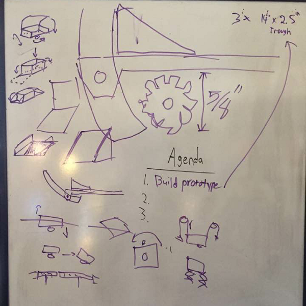

The team had a meet before the busy Christmas period to focus on the main part of of our scoring mechanism: the trough. We discussed possible courses that would be easiest for us to score points and code at the same time. We went through multiple ideas of how the trough would work. One idea was to have our trough consist of rotatable base to account for both balls and blocks. However, as in the top scoring box of the ramp, blocks are the most effiecient way of scoring. Based on that, we decided to make our design to only hold blocks and able to dispense accidently aquired balls. Our final decision was on a rectangular prism with an elevated back side to serve as a kind of backboard for projectiles thrown by our beater bar. The smaller opposite faces will serve as flaps to open or close to dispense blocks to their respective crates.
With our final ideas in mind, we went through our supply of boxes and found one that best fit our idea. Then, using a sheet of cardboard we figured out the actual measurments we needed for the trough and cut out the best model possible. With our model finished we can get started on actually making the trough and designing the systen needed to score our blocks. An early idea is to have a pulley system that can be exchangable depending on the side we are on. For example, if we are on the blue alliance, our pulley system will be right dependent and vice versa. We will have to also make code respective to both sides and switch out before our next match. Now with the prototype done, we can simply recreate the trough using better materials and begin construction of the pulley system.